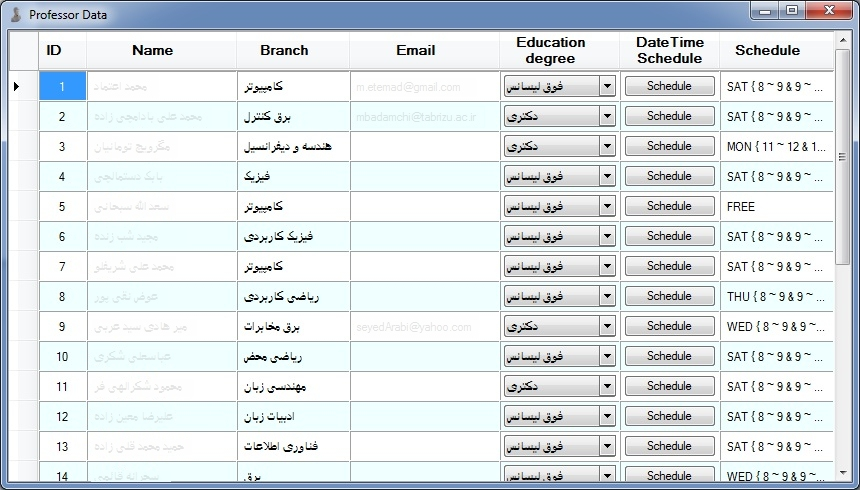

For adding free times schedule to a professor, click on
"Schedule" button's to open the following
window.
And select free times slot in weekdays.
Weekdays be
started from Saturday to Friday, and day times for university is from 8 to 20
by 1 hour steps.
Schedule column's in Professor Data form's is free
times schedule but compiled by this
grammar:
/// Schedule
Scanner and Parser
Grammar's:
///
/// S -> ɛ;
/// S ->
FREE;
/// S -> A;
/// B -> & A;
/// B ->
ɛ;
/// A -> E { T }
B;
/// E -> SUN;
/// E -> MON;
/// E ->
THU;
/// E -> WED;
/// E -> THR;
/// E ->
FRI;
/// E -> SAT;
/// D -> & T;
/// D ->
ɛ;
/// T -> N ~ N
D;
/// N -> 8;
/// N -> 9;
/// N ->
10;
/// N -> 11;
/// N -> 12;
/// N ->
13;
/// N -> 14;
/// N -> 15;
/// N ->
16;
/// N -> 17;
/// N -> 18;
/// N ->
19;
/// N ->
20;
So to make changes on the compiled free
times schedule's, must be used of
grammar.